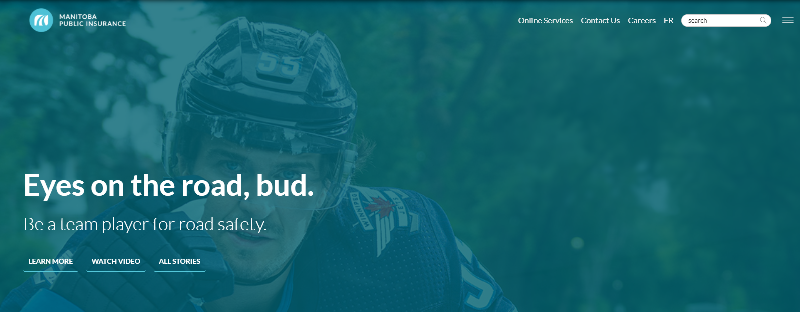
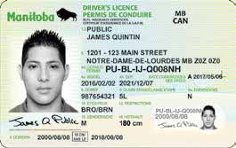

Applying for Manitoba Drivers License
source from: https://www.mpi.mb.ca/Pages/Home.aspx
Getting a driver's license is a must for everyone who comes to Canada. Some people say it is easy to get a driver's license in Canada, because most drivers drive properly and the road conditions are simple. Some people mention the driver's license on the "fear", because this road test is very strict, is in the real section of the test, unlike the domestic have a lot of in the special test section of the test. But anyway, as long as they master the skills, and skilled enough, you can pass the exam!
- Register as a Manitoba Public Insurance Customer
- Visual and Medical Requirements
- Knowledge Test
- Road Test 
Before applying for the written driving test, you need to register your personal information at any Autopac shop in the city Or MPI branch, prepare valid documents such as passport, domestic driver's license and translation notarized copies and two copies Valid address proof to ensure that the address provided is true and valid. Proof of valid residential address They are many kinds, such as a Guarantor Declaration, a phone bill, a policeman Living bills (e.g. electricity), bank statements, blank check housing loan documents with address, rent Housing documents, proof of tax refund, employer's letter, Social Assistance letter, Manitoba Health Health Card, but you can't use your credit Card bill.
After passing the written exam, MPI staff will ask the applicant to take a vision test to check for near/far-sightedness, astigmatism and color blindness. farsightedness, astigmatism and color blindness. If you have poor vision, you will need to wear glasses during the test even if your vision is not high. If you have poor vision, you will need to wear glasses to ensure that you pass. It is important to note that if a test taker wears glasses during the vision test, he or she will be required to wear glasses in the event of a future traffic accident. glasses at the time of the vision test, but is later found not wearing glasses in the event of a traffic accident, he or she may be held The full responsibility. Please be aware of this if you need vision correction, especially if you do not usually wear glasses. People with physical disabilities People with physical disabilities need to be tested to see if they can drive a car normally. After passing both the written and medical examinations, MPI will give the application to the applicant. After passing both the written and physical exams, MPI will take a photo of the applicant and issue a Learner(L) Stage license to the applicant. MPI requires candidates who have obtained a beginner's license to submit a Chinese car driving license.
The MPI written examination must be registered and booked in advance at any Autopac shop in the city Or MPI branch. Please arrive at the test venue 15 minutes before the written test You will be able to take the written examination after reporting to the front desk staff with your documents and passport at the appointed time. The written test will be On the computer. The computer test currently supports Chinese, but you need special instructions when registering.
The written test You will be given 30 minutes to complete the test and 30 questions will be randomly selected from the test bank. Grade on the spot after the exam. Wrong Make no more than six mistakes and pass. The written test is available at least 8 weeks in advance and costs $10.00. If the sum of If the candidate fails the test and is in the GDL stage, he/she can only register for the test after 7 days. If not Yes, you can sign up for the written test the next day.
source from: https://www.mpi.mb.ca/Pages/Home.aspx
The road test must also be booked in advance. The appointment and payment method is the same as for the written test, either by phone or in person Make an appointment at an Autopac/MPI office. You do not need to bring proof of address, just You only need to bring proof of identity (passport or L-class driver's license). You will need to specify the location and time of the road test when you register. Again, you can register 8 weeks in advance. The road test registration fee is $30.
You can register for the road test directly after passing the written test. If you do not have a license from another country, you will have to wait 9 months after passing the written test before you can take the road test. You can wait for 9 months after passing the written test before you can take the road test. During this time, you can have a professional instructor or an experienced driver accompany you to practice your driving skills. During this time, you can have a professional instructor or experienced driver accompany you to practice your driving skills.
References
MPI Driver's Manual from www.mpi.mb.ca/en/pdfs/completehandbook.pdf
License information, from www.mpi.mb.ca/Documents/ClassLicenceSystemBrochure.pdf